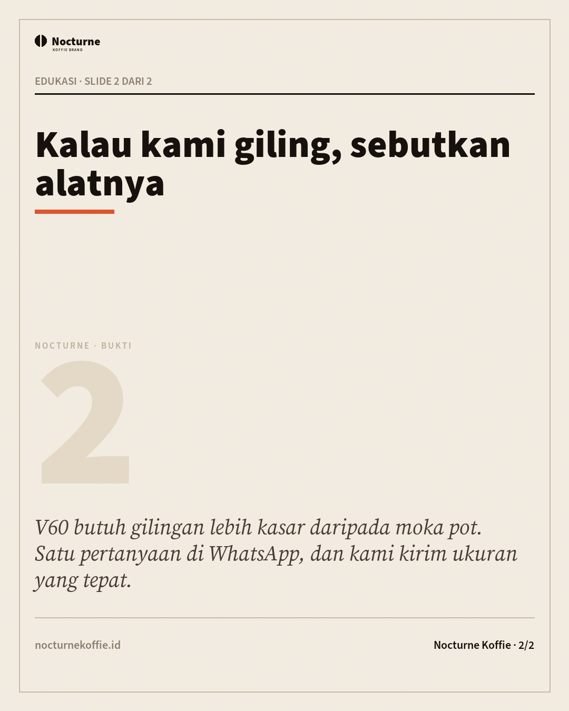
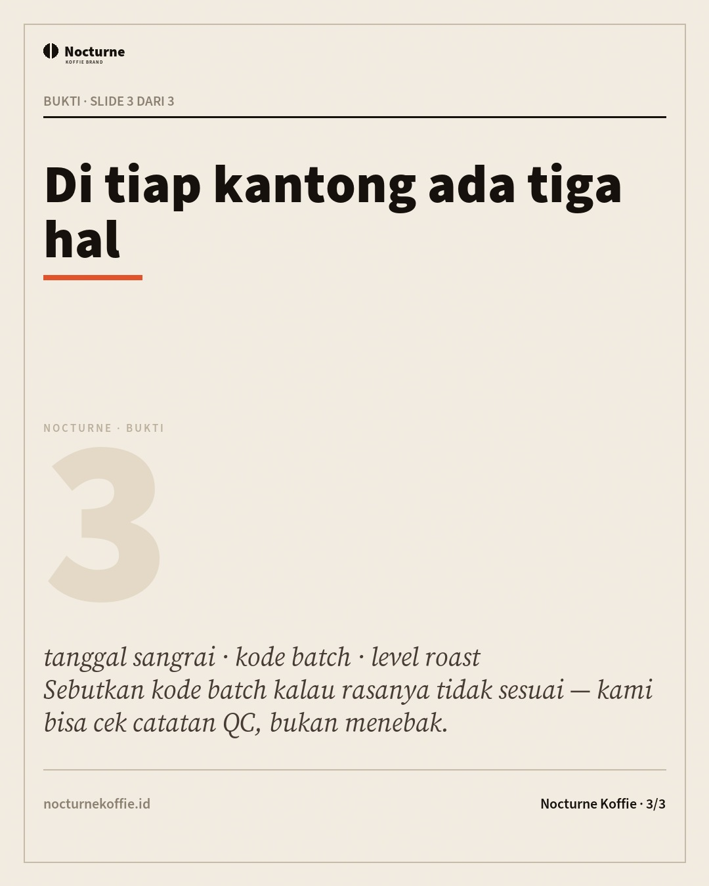
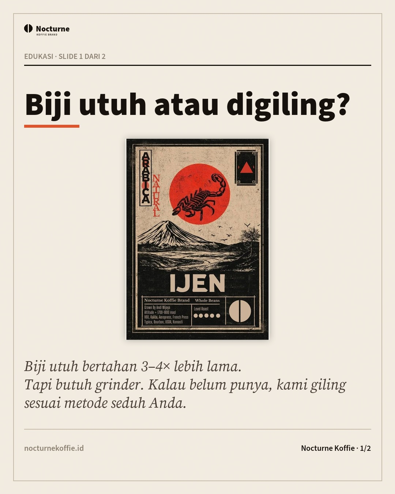

Divisi D4 · kreatif & media · dibuat 30 Oktober 2026
Lab gerak
Tujuh repo dari post @thegreatest_sv (29 Okt 2026) diterapkan di sini — bukan dipasang sebagai plugin, tapi dipakai sebagai aturan dan komponen yang bisa diperiksa ulang. Dua di antaranya tidak bisa dipakai di lingkungan ini (Figma dan Blender tidak ada), dan itu ditulis apa adanya di kolom kanan.
1 · Tujuh repo, apa yang benar-benar dipakai
Kolom terakhir menunjuk berkas di repo ini — kalau tidak ada bukti, jangan percaya klaimnya.
| Repo | Yang dipakai | Yang tidak | Bukti |
|---|---|---|---|
| 1. UI UX Pro Max nextlevelbuilder/ui-ux-pro-max-skill |
Disiplin token: warna, radius, ukuran font, keluarga font dikunci di data/design-system.json lalu dipakai sebagai sumber audit. Palet & font tidak diambil dari repo (brand sudah dikunci FINAL 3.7). | Instalasi CLI/plugin, katalog palet siap pakai, pencarian font otomatis. | data/design-system.json · tools/slop.py (ds-warna, ds-radius, ds-ukuran-font) |
| 2. Impeccable pbakaus/impeccable |
62 antipattern-nya jadi daftar periksa audit: 29 di antaranya bisa diukur dari berkas (garis sisi tebal, teks gradien, easing memantul, denyut status, spasi seragam, label kicker, tanda pisah berlebihan). Temuan nyata langsung diperbaiki. | Plugin untuk Claude/Cursor/Copilot, browser-bundle, agen review otomatis. | tools/slop.py · laporan/slop.md |
| 3. Framelink Figma MCP GLips/Figma-Context-MCP |
Prinsipnya: layout punya sumber yang bisa dibaca mesin. Di sini peran Figma digantikan data/design-system.json, dan output tree ringkas dipakai sebagai bentuk keluaran audit (satu baris per temuan, bukan tangkapan layar). | Server MCP & token Figma: tidak ada akun Figma di lingkungan ini, jadi tidak diklaim. | data/design-system.json · laporan/slop.json |
| 4. React Bits DavidHDev/react-bits |
Empat pola ditulis ulang tanpa React: SpotlightCard, CountUp, MagneticButton, TextReveal per kata, plus pola pin. Semuanya di assets/js/motion-ui.js, dipanggil lewat atribut data-ui. | Paket React/Next, registry shadcn, komponen WebGL/three (berat, di atas fold). | assets/js/motion-ui.js · assets/css/motion-ui.css · motion/index.html |
| 5. GSAP Skills greensock/gsap-skills |
Semantik ScrollTrigger (pin, scrub, start/end) ditiru mini-engine satu loop rAF. Aturan performa repo itu jadi gerbang audit: hanya transform/opacity, listener pasif, will-change tidak permanen, reduced-motion wajib. | GSAP sendiri (≈70 KB + CDN). Belum perlu selama adegan tanpa pin rumit; kelas CSS-nya sudah dipisah supaya bisa ditukar nanti. | assets/js/motion.js · assets/js/motion-ui.js · tools/slop.py (animasi-layout, listener-pasif) |
| 6. HyperFrames heygen-com/hyperframes |
Adegan 9:16 ditulis sebagai HTML dengan timeline waktu eksplisit (motion/frame-01..05.html + motion/timeline.json). Tiap adegan bisa diseek (?t=3.2) dan direkam layar, atau dirender ffmpeg di mesin yang punya ffmpeg. | Runtime HyperFrames, render server, AI voice/avatar. Encode video tidak dijalankan di sandbox ini (tidak ada ffmpeg) — dan tidak diklaim ada. | motion/frame-*.html · motion/timeline.json |
| 7. MCP for Blender ahujasid/mcp-for-blender |
Tidak ada Blender di lingkungan ini, jadi **tidak dipakai**. Penggantinya: bidang miring CSS 3D sederhana (kartu produk) yang tetap ringan, dengan batas putar 3,5° — lebih dari itu terasa mainan. | Blender, MCP server, Meshy/Tripo (berbayar), aset GLB. | assets/js/motion.js §4c (tilt kartu) |
2 · Komponen gerak (hidup di halaman ini)
Semua komponen ditulis ulang dari React ke vanilla JS dan dipanggil lewat atribut
data-ui. Coba: gerakkan kursor di kartu, klik tombol, gulir ke blok pin di bawah.
Spotlight kartu
Kartu produk yang menyala di bawah kursor
Sorotan mengikuti pointer, mati di perangkat sentuh dan saat reduced-motion — bukan cahaya yang berdenyut sendiri.
react-bits · SpotlightCard → motion-ui.js
Hitung angka
Ambang QC tampil sebagai angka yang berjalan saat masuk layar. Tanpa overshoot, tanpa angka berkedip.
react-bits · CountUp → motion-ui.js
Tombol magnet
Putar adegan 01 →Geseran maksimal 6 px. Lebih dari itu terasa seperti mainan.
react-bits · MagneticButton → motion-ui.js
Pin bertahap (semantik ScrollTrigger)
Tiga langkah menyala mengikuti posisi gulir — satu loop requestAnimationFrame,
listener pasif, tanpa GSAP. Ini yang dipakai untuk menjelaskan proses sangrai di landing page.
data-ui="pin" .ui-pin__step ×3 → menyala saat progres 0 → 1
01 · Drum mulai
Suhu masuk, biji berubah warna.
02 · First crack
Bunyi retak pertama — titik yang menentukan.
03 · Berhenti di catatan
Bukan di perasaan: berhenti saat development tercapai.
Ia hanya membuat mata tahu ke mana harus pergi.
3 · Panggung 3D untuk landing page
Gaya "sangat 3D" dari galeri desain bukan WebGL: perspective, objek berlapis di kedalaman berbeda, lantai berpetak, dan kamera yang bergerak. Tiga komponennya hidup di landing kampanye — di sini hanya daftarnya.
| Komponen | Atribut | Batas |
|---|---|---|
| Panggung hero 3 kartu di 3 kedalaman + chip data | data-3d="panggung" | rotasi 14° · dolly 150 px |
| Silinder klip 5 pane, 72° per langkah | data-3d="silinder" | radius 292 px · perspective 1400 px |
| Kartu timbul tiga kartu produk | data-3d="timbul" | miring maks 8° · anak +16 px |
Jatuh datar di tiga keadaan: tanpa JS, layar < 900 px,
dan prefers-reduced-motion. Korsel berubah menjadi grid, bukan setengah lingkaran
yang setengah jadi. Berkas: assets/css/motion-3d.css ·
assets/js/motion-3d.js.
4 · Adegan 9:16 — menulis HTML, bukan merender video
Tiap adegan adalah halaman HTML dengan timeline waktu eksplisit. Bisa diputar,
dijeda, dan diseek (?t=3.2). Untuk jadi video: rekam layar, atau render ffmpeg di
mesin yang punya ffmpeg — di sandbox ini tidak ada, dan tidak diklaim ada.
 ▶ 9 detik · 4 beat
▶ 9 detik · 4 beat
Edukasi · reel-tanggal-sangrai

▶ 9 detik · 4 beatEdukasi · carousel-02b

▶ 9 detik · 4 beatJualan · carousel-01c

▶ 9 detik · 4 beatEdukasi · carousel-02a
Edukasi · carousel-02b
Lembar film — nomor frame, ketukan, arc energi, dan cue
suara untuk tiap adegan: motion/film-sheet.md
(tools/film.py · 120 BPM · 540 frame · 20 cue). Dibuat karena 5 klip yang
bagusnya beda-beda tetap terasa acak; grid yang sama membuatnya satu keluarga.
Timeline (bahan perekaman)
| Adegan | Waktu | Teks | Sumber klaim |
|---|---|---|---|
| 01 | 0.0–3.0s | Kopi pahit padahal baru beli? Cek tiga hal ini. | catalog.json |
| 01 | 3.0–5.0s | Pertama: gilingan terlalu halus untuk alat Anda. Kedua: air di atas 94°C. | catalog.json |
| 01 | 5.0–7.0s | Ketiga: kopi sudah lewat 21 hari dari tanggal sangrai. | batch-qc.csv |
| 01 | 7.0–9.0s | Pesan lewat WhatsApp — sebutkan metode seduh & kota Anda. | — |
| 02 | 0.0–3.0s | Kenapa kopi kafe terasa lebih kuat dari kopi rumahan. | catalog.json |
| 02 | 3.0–5.0s | Biasanya bukan biji: rasio 1:15 dan gilingan lebih halus mengekstrak lebih banyak. | catalog.json |
| 02 | 5.0–7.0s | Coba 15 g kopi untuk 225 ml air, lalu bandingkan dengan resep Anda sekarang. | catalog.json |
| 02 | 7.0–9.0s | Pesan lewat WhatsApp — sebutkan metode seduh & kota Anda. | — |
| 03 | 0.0–3.0s | Rp23.000 vs Rp152.000: bedanya bukan cuma berat. | catalog.json |
| 03 | 3.0–5.0s | Rp23.000 itu 100 g robusta Raung. Rp152.000 itu 500 g arabika Ijen. | catalog.json |
| 03 | 5.0–7.0s | Per gram: Rp230 lawan Rp304. Bedanya di proses dan ketinggian tanam. | catalog.json |
| 03 | 7.0–9.0s | Pesan lewat WhatsApp — sebutkan metode seduh & kota Anda. | — |
| 04 | 0.0–3.0s | Arabika Ijen vs robusta Raung, satu meja. | catalog.json |
| 04 | 3.0–5.0s | Ijen 1.700–1.800 mdpl, proses natural: manis, buah, aftertaste panjang. | catalog.json |
| 04 | 5.0–7.0s | Raung 422–443 mdpl: body tebal, cokelat gelap, pahit halus di akhir. | catalog.json |
| 04 | 7.0–9.0s | Pesan lewat WhatsApp — sebutkan metode seduh & kota Anda. | — |
| 05 | 0.0–3.0s | Tiga hal yang membuat kopi rumahan terasa hambar. | catalog.json |
| 05 | 3.0–5.0s | Gilingan terlalu kasar. Air terlalu dingin. Kopi lewat 30 hari dari sangrai. | catalog.json |
| 05 | 5.0–7.0s | Cek satu per satu; yang tersering ternyata gilingan. | catalog.json |
| 05 | 7.0–9.0s | Pesan lewat WhatsApp — sebutkan metode seduh & kota Anda. | — |
Berkas mesin: motion/timeline.json ·
satu baris per cue, tanpa angka yang tidak dilacak ke data/.
5 · Audit anti-slop terakhir
29 aturan diperiksa mesin dari 62 antipattern Impeccable + aturan performa GSAP Skills + kontrak token. Hasil sekarang: 0 kritis · 0 perhatian.
| Aturan | Berkas | Bukti |
|---|---|---|
| Tidak ada temuan kritis maupun perhatian pada audit terakhir. | ||
Laporan penuh: laporan/slop.md · kontrak: data/design-system.json.
6 · Batas yang tidak saya tutupi
Figma MCP — tidak ada akun Figma di sini. Yang diambil prinsipnya:
layout punya sumber mesin. Sumber itu kini data/design-system.json.
MCP for Blender — Blender tidak ada, jadi tidak ada model GLB. Penggantinya CSS 3D sungguhan (perspective + translateZ, rotasi ≤ 14°) — cukup untuk panggung dan kartu, bukan untuk benda bertekstur.
HyperFrames — runtime dan render server tidak dipasang. Yang ada: adegan HTML deterministik + timeline. Encode video tetap di luar sandbox.
GSAP — tidak dipasang (≈70 KB + CDN). Semantiknya ditiru; kelas CSS dipisah supaya bisa ditukar bila nanti butuh pin/scrub rumit.